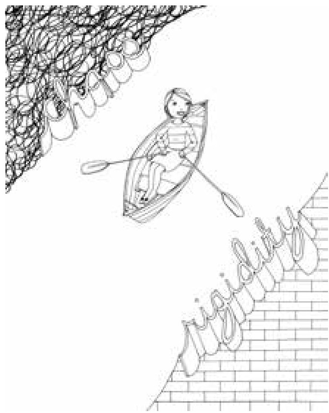

01 · 你孩子的大脑，是你用每一次互动"布线"出来的
玛丽在公司接到电话：两岁的儿子马可和保姆出了车祸。
她疯了一样赶到事故现场。保姆癫痫发作，车撞了，救护车已经把保姆送去了医院。一个消防员正试图安抚马可，但没什么用。玛丽冲上去把马可抱进怀里——孩子立刻安静了。
然后，马可开始不断重复一个词："咿呀呜呜。"
"咿呀"是索菲亚，他保姆的名字。"呜呜"是救护车。一个两岁的孩子，用自己仅有的语言，在给妈妈讲刚才发生的事：索菲亚离开了我。
如果是你，你会怎么做？很多父母会安慰一句"索菲亚没事的"，然后转移注意力——"我们去买冰激凌吧！"接下来的几天尽量避免提起，怕孩子难受。
玛丽没有。那天晚上和接下来的几周，每当马可回想起车祸，玛丽就陪他一遍遍地复述："你和索菲亚出车祸了，是吗？索菲亚生病了，她开始晃来晃去，然后两辆汽车撞到一起了，对不对？'呜呜'来了，它把索菲亚带去看医生了。现在她已经好多了，我们昨天还去看过她，对不对？"
几周后，马可提起车祸的次数越来越少。那次事故没有变成创伤，而是变成了一段"发生过、处理过、放下了"的人生经历。
玛丽不是心理学家。她只是上过一堂蒂娜（本书合著者）的儿童思维拓展课。她知道一件大多数父母不知道的事：大脑不是长好的，是被"经历"塑造出来的。
我们对孩子的身体了如指掌，对大脑却一无所知
西格尔在第一章开头写了一句很扎心的话：
"父母一般都对孩子的身体了如指掌——体温高于37度是发烧，伤口要清理防感染，哪些食物会让孩子兴奋到睡不着。然而，即使最有爱心、最有知识的父母，往往也缺乏儿童大脑方面的常识。"
但大脑几乎决定了我们是谁、我们会做什么——遵守纪律、制定决策、自我意识、学习能力、人际关系。而且，孩子的大脑是由父母带给他们的经历和感受所塑造的。
这不是比喻。这是神经科学。
大脑不是一台机器，是一支合唱团
大多数人对大脑的理解是错的。我们以为大脑是一个统一的整体——"我"在思考，"我"在感受。但事实是，大脑分为很多部分，各有不同的功能：
- 左脑帮助你逻辑思考，把想法组织成句子
- 右脑帮助你体验情感，解读面部表情、语气、身体姿势
- "爬行动物脑"让你做出本能反应和生死抉择
- "哺乳动物脑"引导你走向人际关系
- 还有专门处理记忆的区域，专门做道德判断的区域……
西格尔的说法是：大脑有多重人格——有理性的，有非理性的；有深思熟虑的，也有本能反应的。 难怪我们在不同的时候表现得甚至不像同一个人。
问题不在于这些部分各司其职。问题在于，它们需要协同运作。就像一个合唱团——女高音、男低音、男高音各自唱各自的，不叫音乐。只有协调在一起，才能唱出一个人无法完成的合声。
西格尔把这种协调称为整合。这是全书最重要的概念。
你给孩子的每一次经历，都在"重新布线"
近年来神经科学有一个颠覆性的发现：大脑是"柔软的"，或者说是"可塑造的"。
每经历一次体验，大脑里的一些神经元就会被激活，或者说"开火"。大脑有上千亿个神经元，每一个都与其他上万个神经元相连。当某些神经元被重复激活，它们之间的联结就会加强。久而久之，大脑就"重新布线"了。
而且这个可塑性贯穿一生。不仅仅是儿童，老年人大脑也在被经验持续塑造。
这意味着什么？西格尔写道：
"父母为孩子提供的经历，可以直接塑造孩子正在生长的大脑。连续几个小时盯着屏幕打游戏，会以某种特定方式给大脑布线；体育活动、音乐训练以另一种方式布线；和家人朋友面对面互动，又是另一种布线方式。"
生活中发生的一切，都会影响大脑发育的方式。
这不是要让每分每秒都变成教育时刻——那会把人逼疯。但它告诉你一件事：你已经在塑造孩子的大脑了，不管你有没有意识到。你的每一次反应——他发脾气时你是吼回去还是蹲下来、他害怕时你是推开还是抱住、他哭泣时你是转移注意力还是帮他命名情绪——都在给他大脑的"布线图"添上一笔。
幸福之河

西格尔用一个比喻来解释整合的好坏，叫幸福之河。
想象一条宁静的河流穿过乡间。你坐在独木舟里，安静地顺流而下，和周围的世界融为一体。你对自我、他人和生活都有清晰的认识，环境改变时你能灵活调整，始终保持在平静的水流中央。这就是整合良好的状态——用西格尔的话说，这就是心理健康。
但这条河有两岸。
一边是混乱。 靠近这片水域，你会被困惑和焦虑包围。情绪不堪重负，完全失控。孩子发脾气、崩溃、攻击他人——是漂向了混乱的河岸。
另一边是刻板。 和失控相反——强行控制一切，完全不愿意改变、妥协或商讨。孩子死活不肯分享玩具、固执到不可理喻——是漂向了刻板的河岸。
我们每个人，包括孩子，都在两岸之间来回移动。偏离中央越久，离心理健康就越远。而整合就是那把桨——帮孩子（也帮你自己）划回河中央。
这个比喻异常清晰。下次孩子情绪崩溃的时候，你不用想"他怎么又不听话了"，你只需要想：他的大脑现在没有整合。他漂到混乱那边去了。我的任务是帮他划回来。
不是在"管教"，是在"布线"
西格尔反复强调一句话：在25岁之前，人的大脑都不能算是发育成熟的。 这是一段漫长的旅程。不管学龄前的孩子多聪明，他都不会拥有10岁孩子的大脑，而且几年之内都不会。
大脑成熟的速度主要受基因影响。但整合的程度，是我们可以通过每一天的养育去影响的。
玛丽帮马可复述车祸故事，不是在讲道理，是在帮他整合大脑——让负责事实和逻辑的左脑与负责情绪和感受的右脑协同运作。没有这个整合过程，马可的恐惧可能会遗留下来，将来以别的面目浮现：可能是对坐车或与父母分开的恐惧，可能是右脑在其他方面爆发失控，导致经常发脾气。
但现在，那次事故变成了一种被处理过的经历。不是创伤，是记忆。
西格尔的说法很精确："生存时刻"就是"成长时刻"。 那些让你奋力挣扎的日常——孩子打架、发脾气、害怕上学、拒绝分享——恰好是帮他整合大脑的最佳机会。你不需要专门抽出"教育时间"。每一次冲突，每一次崩溃，每一次拥抱，都在布线。
这一章的核心，三句话
- 大脑是"柔软的"，被每一次经历塑造。 你不是在"管教"孩子，你是在用每一次互动，物理性地塑造他大脑的结构。
- 整合是心理健康的核心。 大脑各部分协同运作时，孩子是灵活、适应、情绪稳定的。分裂时，他漂向混乱（崩溃）或刻板（固执）。
- "生存时刻"就是"成长时刻"。 孩子发脾气、害怕、崩溃——不是麻烦，是机会。不需要额外抽时间教育，每一次冲突就是你帮他整合大脑的时机。
学习反馈
在飞书中回复本条消息，填写你的答复。